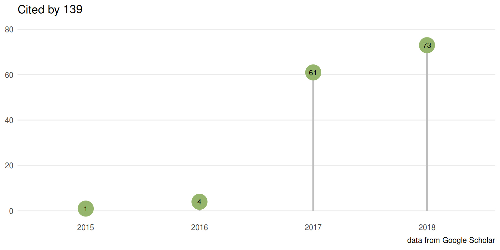

Let us know if you have published using ggtree and your publication will be featured here.

The role of adaptive strategies in plant naturalization. Ecology Letters, 2018.
Microbial biogeography of 925 geothermal springs in New Zealand. Nature Communications, 2018, 9:2876.
Defining endemic cholera at three levels of spatiotemporal resolution within Bangladesh. Nature Genetics, 2018, 50(7):951-955.
Recent Asian origin of chytrid fungi causing global amphibian declines. Science, 2018, 360(6389):621-627.
Sustained transmission of high-level azithromycin-resistant Neisseria gonorrhoeae in England: an observational study, The Lancet Infectious Disease. 2018, 18(5):573-581.
DSYB catalyses the key step of dimethylsulfoniopropionate biosynthesis in many phytoplankton. Nature Microbiology, 2018, 3:430-439.
Amphibian chytridiomycosis outbreak dynamics are linked with host skin bacterial community structure. Nature Communications, 2018, 9:693.
Molecular epidemiology reveals the role of war in the spread of HIV in Ukraine. PNAS, 2018, 115(5):1051-1056.
Integrated view of Vibrio cholerae in the Americas. Science, 2017, 358(6364):789-793.
Phylogenetic analysis of the human antibody repertoire reveals quantitative signatures of immune senescence and aging. PNAS, 2017, 114(5):1105-1110.
Horses in Denmark Are a Reservoir of Diverse Clones of Methicillin-Resistant and -Susceptible Staphylococcus aureus. Frontiers in Microbiology, 2017, 8:543
Gut metagenomes of type 2 diabetic patients have characteristic single-nucleotide polymorphism distribution in Bacteroides coprocola. Microbiome, 2017, 5:15
Function and Phylogeny of Bacterial Butyryl Coenzyme A:Acetate Transferases and Their Diversity in the Proximal Colon of Swine. Applied and Environmental Microbiology. 2016, 82(22):6788-6798.